Here are some experiments with image magnification by linear scale 3. We avoid learning image priors
from data; instead, we hand-craft heuristics. For instance, nearest neighbor interpolation
produces jagged squares:
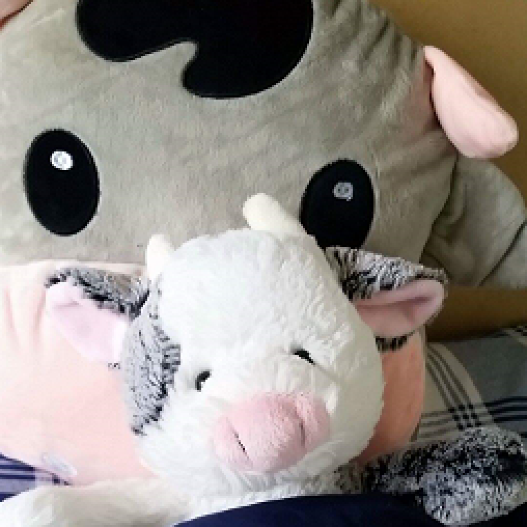
Nearest neighbors.
An alternative is bilinear interpolation. But this overly blurs edges:
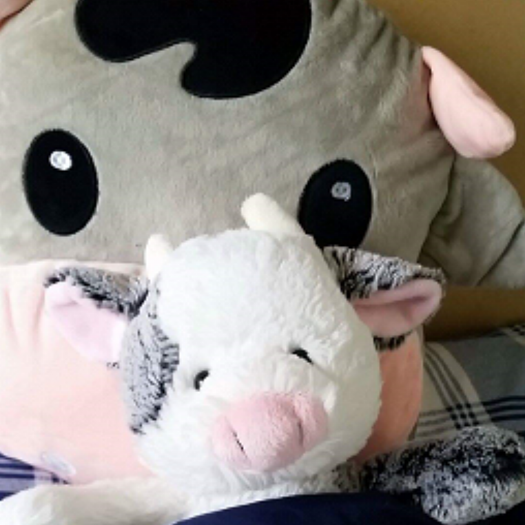
Bilinear.
As a compromise, we propose to round each pixel of the bilinearly interpolated image to the
neighbor of the original image (among 4 neighbors) that is closest in color. Here, we use euclidean
distance in RGB space:
Rounding. Overall, edges are sharply defined yet possess smooth contours:
witness the background cow's horns and the foreground cow's eyes.
The basic idea is: regress a sigmoidal function (to represent an "edge") on each small neighborhood of
pixels. Then sample from this function to interpolate. At this point, the algorithm is analogous to
bilinear interpolation (except for the functional form of the regression). However, the key step in
the proposed algorithm is that we scale the sigmoidal function's input before sampling in order to keep
the represented edge sharp. The results on some natural image patches are quite promising! For
instance, observe the sharpness and non-jaggedness of edges in the photographs of text and of
window-shade-banner-things below.
Comparison of Methods
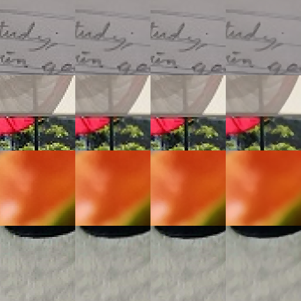
Left to right: nearest neighbors; bilinear; rounding; regression
On the other hand, the proposed algorithm suffers from over-smoothing due to the regression. See how
the textures in fruit and fur get smoothed out below:
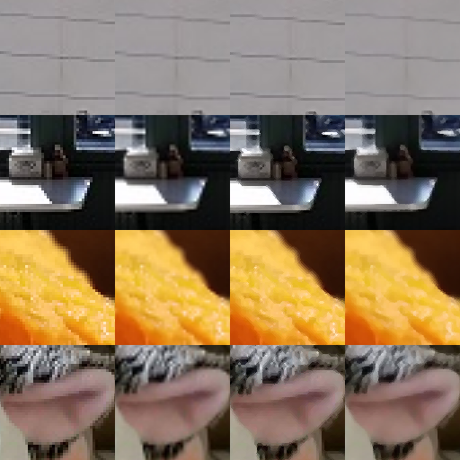
Left to right: nearest neighbors; bilinear; rounding; regression
Repeated Magnification
I've found a good application of the rounding interpolator's sometimes artificial-looking output:
art! Take the following hat image, for example. If we downsample it, then interpolate it, we
get a nice glassy effect:
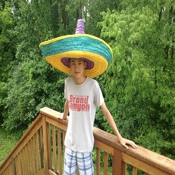
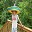
Left to right: original image; shrunk by linear factor 8; restored via repeated interpolation
Here's a small smiley-face I drew:
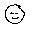.
And here's a magnified version:
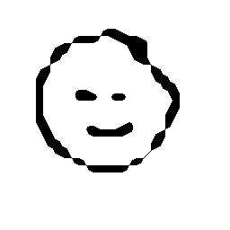
Smile magnified by linear scale 8
It's fun to repeatedly magnify noise:
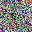
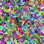
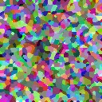
Texture generated by repeatedly magnifying uniform noise
Cool! This actually looks like a nice desktop background. Let's magnify noise of a different aspect ratio
(say, 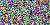)
to get this nice wallpaper:
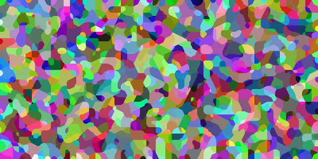
Wallpaper generated by magnifying uniform noise by linear scale 16